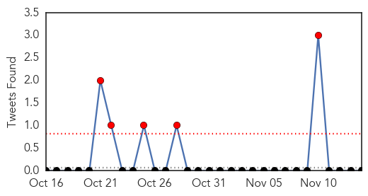
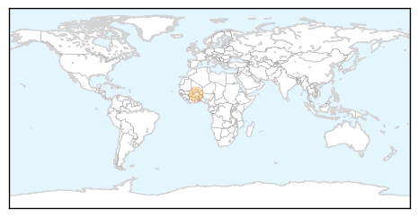
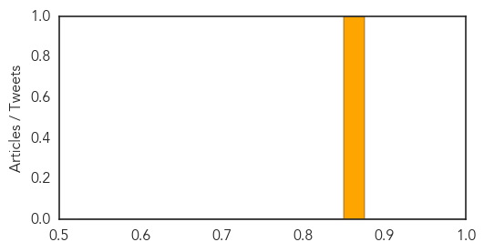

Cholera
30-Day Web Trend
4 alerts, 1 warnings

30-Day Twitter Trend
0 alerts, 0 warnings

Article Locations

Article Confidences

Top Articles:
- 0.982
- Bahrain free from cholera
- 0.863
- Brig Muhoozi, Kenya Condemn Paris Terror Attacks
- 0.735
- health risks and alternative solutions
- 0.717
- 25,000 wounded each month in Syria, cholera feared: WHO
- 0.694
- WHO says 25,000 wounded a month in Syria; medicines lacking and cholera feared
- 0.672
- Refugees In Nyumanzi Educated On Ways To Prevent Cholera > Gurtong Trust > Editorial
- 0.653
- Wounded toll at 25,000 a month in Syria, medicines lacking, cholera feared: WHO
- 0.534
- Wounded toll at 25,000 a month in Syria, medicines lacking, chol
Top Tweets:
- 0.744
- Prions pour Haiti! Cholera, 2 morts et 32 personnes infectees https://t.co/LnJpqewcN1
Meningitis
30-Day Web Trend
1 alerts, 0 warnings
30-Day Twitter Trend
5 alerts, 0 warnings

Article Locations
Article Confidences
Top Articles:
Top Tweets:
-
No tweets found for Nov 14, 2015